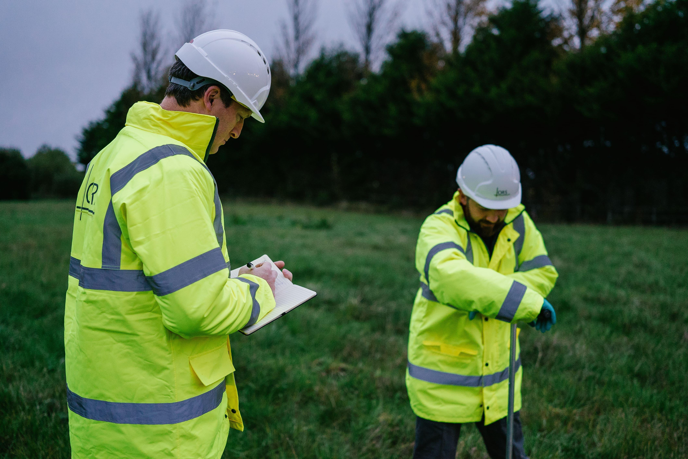
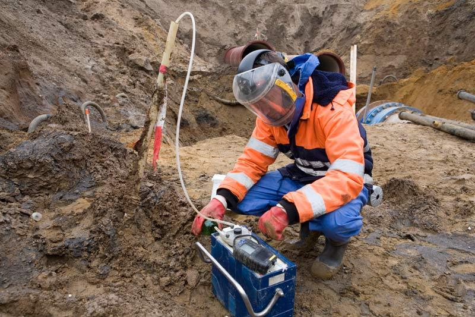
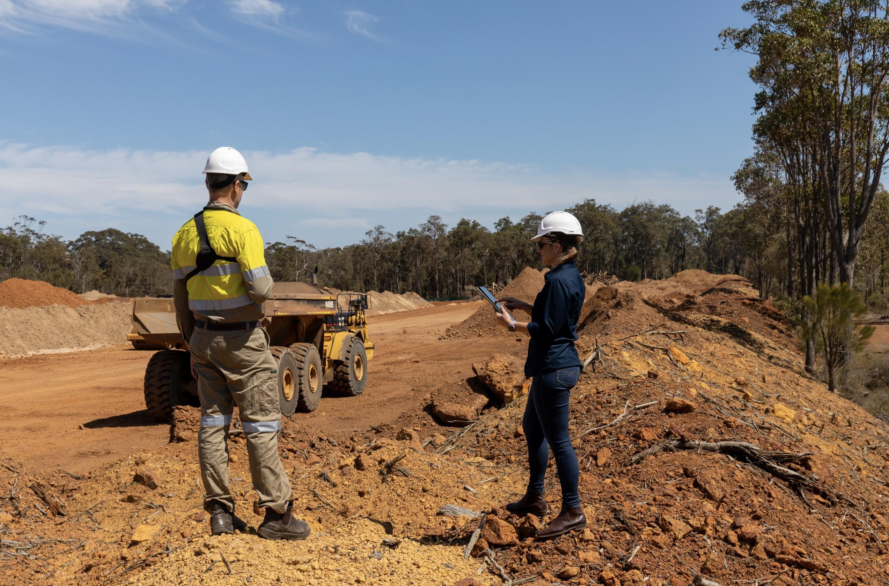
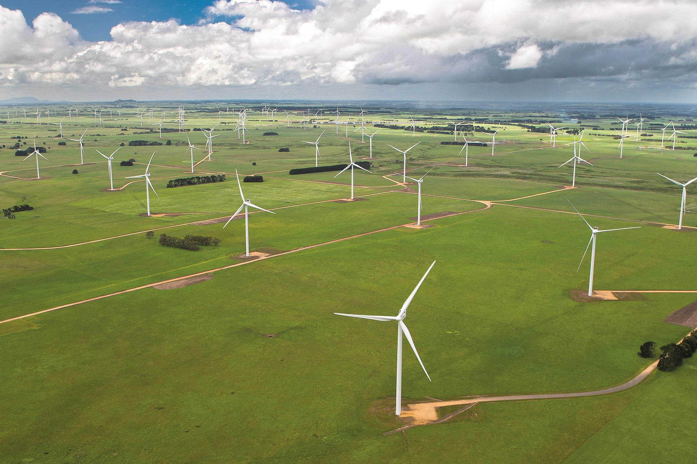
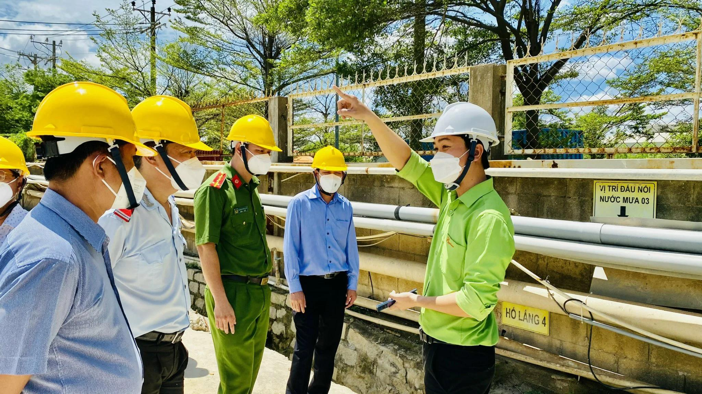

We conduct certified, defendable scientific investigations and audits to guide your development projects through compliance hurdles.

EIAFull-scope statutory studies evaluating physical, chemical, biological, and socio-economic footprints to obtain municipal and federal project clearance.

Due DiligencePhase I & II Environmental Site Assessments (ESA) resolving historic contamination liability and soils compliance before real estate trades.

MiningSpecialized acid drainage modeling, hydrogeological mapping, tailing pond risk charts, and tailing basin reclamation schedules.

ConstructionOn-site monitoring during construction. We audit sediment drainage loops (SWPPP), erosion controls, dust mitigation, and acoustic checks.
Industrial emission testing and AERMOD dispersion modeling verifying clean air codes for chemical plants and factories.

WaterAquifer flow simulation, chemical pollutant tracing, and wastewater discharge checks to secure local watershed safety clearances.
Choose the appropriate technical depth matching your development scope and local regulatory requirements.
Ideal for initial site screening. Reviews zoning guidelines, historical registries, and defines potential ecological roadblocks.
Designed for large construction, mining, and road permits. Full laboratory analyses and interdisciplinary field monitoring.
Ongoing tracking of environmental parameters during operations. Live database feeding directly to corporate dashboards.
Common technical and legal inquiries regarding our environmental compliance surveys and service packages.
Typically, a comprehensive EIA requires 3 to 6 months depending on seasonal biological tracking requirements (e.g. mapping spring migration or winter streamflows) and geographic scoping size.
Yes. All our soil, air, water chemistry, and acoustic surveys are conducted using EPA-approved instrumentation and certified laboratories, satisfying federal, state, and local councils.
Phase I is a desktop and visual review of historical site use, title records, and chemical storage to identify recognised environmental conditions. Phase II involves physical sampling — soil cores and groundwater assays — to confirm or rule out contamination.
Absolutely. Envit operates globally and tailors our assessment frameworks to align with EU EIA Directives, World Bank Environmental Standards, and regional environmental regulators across Asia-Pacific, Africa, and the Middle East.
Yes. Our regulatory specialists attend municipal and federal hearings, prepare technical response documents, and liaise directly with reviewing agencies to defend assessment findings on your behalf.
We install automated water, air, and acoustic sensors around your site that feed real-time data to your corporate dashboard. Our team issues monthly compliance bulletins and annual audit submissions to keep you continuously within licence conditions.
You receive seepage and acid rock drainage modelling reports, tailing pond safety audits, hydrogeological maps, and a mine reclamation layout file — all certified for submission to mining regulators.
Simply reach out via our Contact page or submit your project blueprint through the enquiry form. Our team will schedule a scoping call within 48 hours.